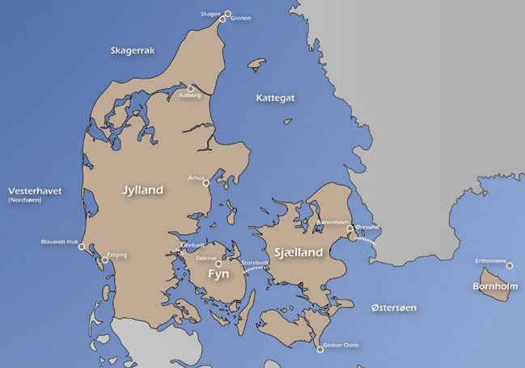
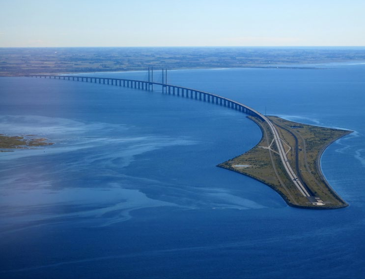

6.1 – DANMARKS GEOGRAFI
sidde 174
Kapitel 6 Temaopslag
Det danske landskab er formet af de istider, som i flere omgange helt har dækket det område, der i dag udgør Danmark. Isen smeltede for cirka 11.500 år siden.
Danmark er et af verdens lavest beliggende lande. I gennemsnit ligger Danmarks areal 34 meter over havets overflade. Det højeste naturlige punkt hedder Møllehøj og ligger i det østlige Jylland cirka 170 meter over havets overflade.
Danmarks areal er på cirka 43.000 km2 (kvadratkilometer) og er mest dækket af frugtbar, leret og sandet jord, men enkelte steder er landskabet meget anderledes.
På den østlige side af øen Møn ligger der for eksempel en næsten 130 m høj klint, Møns Klint. Også øen Bornholm og øgruppen Ertholmene, der ligger ude i Østersøen, adskiller sig fra det øvrige landskab. Øerne er de eneste steder i Danmark, hvor man kan se grundfjeldet. Danmark var tidligere dækket af skov, men i dag er cirka 60 procent af landet opdyrket.
Læremateriale Til Indfødsretsprøven
sidde 175
Danmark består af en halvø (Jylland) og 443 navngivne øer. Der lever dog kun mennesker på cirka 80 af de danske øer – resten er små og ubeboede. Den største ø er Sjælland. Syd for Sjælland ligger øerne Lolland og Falster. På grund af de mange øer har Danmark en meget lang kystlinje, nemlig cirka 7.300 km, og intet sted i Danmark er der mere end 52 km til havet. Nordsøen er det største af havene omkring Danmark.
Det ligger ud for den jyske vestkyst og kaldes også for Vesterhavet. Nord for Sjælland og Fyn ligger farvandet Kattegat, der mod syd er forbundet med Øster søen af de tre stræder Lillebælt, Storebælt og Øresund. Det er kun i Sønder jylland, den sydligste del af Jylland, at der er en fast landgrænse (på 68 kilo meter) til et naboland, og det er til Tyskland.
Klimaet i Danmark er især præget af beliggenheden ved Nordsøen og den korte afstand til kysten overalt i landet. Nede fra Den Mexicanske Golf føres en vedva rende strøm af varmt vand, den såkaldte 'Golfstrøm', mod Nord-Europa. Pga. af Golfstrømmen er klimaet i det nord-vestlige Europa – og særligt om vinteren – markant mildere end klimaet andre steder i verden, som ligger lige så nordligt – fx Moskva eller det sydlige Alaska. De koldeste måneder (januar og februar) har en gennemsnitlig temperatur om dagen på tre-fire grader, mens de varmeste (juli og august) i gennemsnit ligger på cirka 22 grader. Det kan dog både blive væsentlig koldere og varmere. Den laveste temperatur, der nogensinde er målt i Danmark, er minus 31,2 (i 1982), mens den højeste er 36,4 (i 1975).Landko
Læremateriale Til Indfødsretsprøven

sidde 176
Danmark er i dag forbundet med flere broer og tunneller. I 1935 blev den første bro over Lillebælt mellem Jylland og Fyn indviet, og i 1970 åbnede endnu en Lillebæltsbro. I 1997 blev Storebæltsforbindelsen mellem Fyn og Sjælland indviet for jernbanetrafik og året efter i 1998 for biltrafik. I 2000 blev der med Øresundsforbindelsen skabt en fast forbindelse over farvandet Øresund mellem Sjælland og nabolandet Sverige.
Danmarks hovedstad og største by er København, der ligger på den østlige del af Sjælland. I dag bor cirka en tredjedel af Danmarks befolkning i hovedstads området, det vil sige i selve København og de kommuner, der ligger omkring København.
Aarhus (cirka 300.000 indbyggere) er den største by i Jylland. Den ligger på Jyllands østkyst og er Danmarks næststørste by. Den største by på Fyn er Odense (cirka 200.000 indbyggere). Det er landets tredjestørste by. Danmarks fjerde største by er Aalborg (cirka 125.000 indbyggere), som ligger i Nord-Jylland. Den femtestørste er Esbjerg (cirka 75.000 indbyggere) i Vest-Jylland.
De vigtigste råstoffer i Danmark har i de senere år været den olie og naturgas, der ligger i havbunden under den danske del af Nordsøen. Danmark har siden slutningen af 1990’erne eksporteret mere energi, end landet har importeret. Udvindingen af olie og naturgas har derfor relativ stor betydning for den danske økonomi, selv om betydningen har været faldende. I december 2020 besluttede Folketinget at afslutte denne produktion senest i 2050. Det skyldes blandt andet et ønske om grøn omstilling til vedvarende energi.Øresundsbroen mellem Sjælland o
Øresundsbroen mellem Sjælland og Skåne. Foto: Nick D.
Læremateriale Til Indfødsretsprøven

Fonte: Læremateriale til Indfødsretsprøven, SIRI.